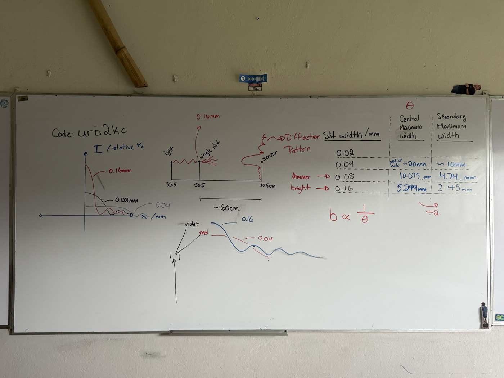
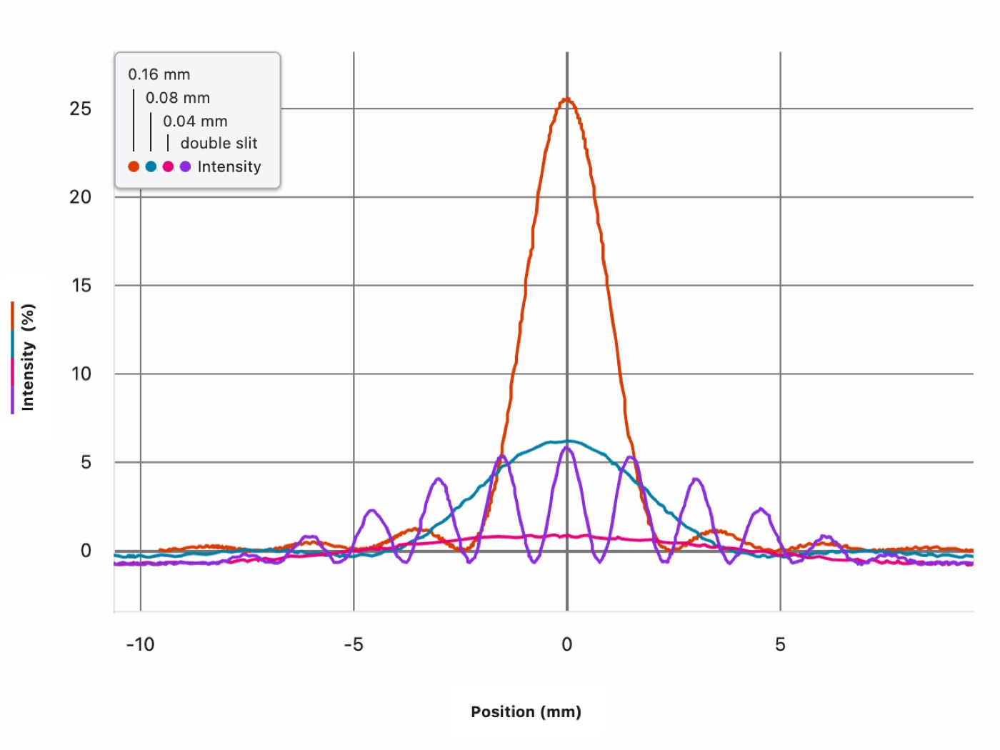

One apparatus, no projector — live data streamed straight to every student's own screen, ending with a double-slit preview nobody gets to resolve just yet.
This is an experiential activity built around one Vernier diffraction apparatus. I do not have one for every group. Instead, Graphical Analysis Pro shares its live data directly to every student's device. There is no projector: students look at the physical apparatus and the resulting data on their own screens at the same time. I begin with the \(b = 0.16\ \mathrm{mm}\) aperture.
When the first pattern appears, a student goes to the board and records what the class observes. We change the aperture, measure the new pattern, compare it with the earlier result, and discuss the difference. Because everyone has the shared data, I can move from table to table and work directly on students' screens: showing them how to measure, noticing what they are doing correctly, correcting their analysis, and answering questions. One apparatus becomes a shared experiment rather than something the class passively watches at the front.
I finish with the double slit. Students immediately see that its pattern is different, but they can still identify the broader single-slit diffraction envelope around the finer interference structure. I do not resolve that observation here. It is the hook for the next class and the transition into double-slit interference.

